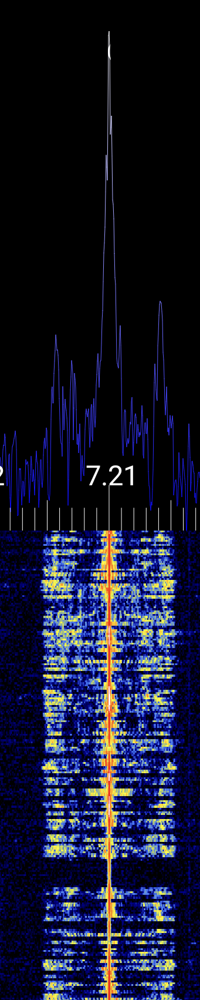
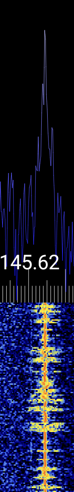
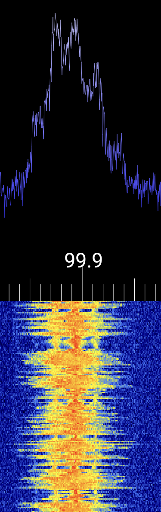
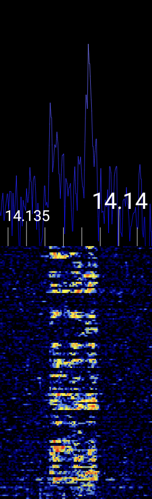
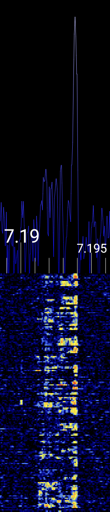
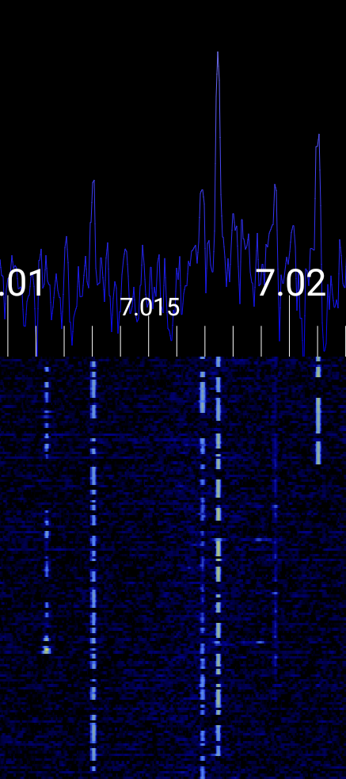

Demodulation Tab
Once you're receiving signals with your SDR or replaying an IQ file, the Demodulation Tab allows you to actually listen to and fine-tune a specific signal. This is where you select the demodulation mode (like AM or FM), adjust demodulation parameters and the audio level.
Demodulation Mode
Picking the correct demodulation mode is absolutely essential. If you're not using the right mode for a given signal, the result will be distorted audio — or just static. The demodulator is responsible for decoding how the original audio or data is embedded in the radio signal, and using the wrong one is like trying to play a vinyl record with a laser pointer — you won’t get music, just noise.
Use the dropdown menu at the top right to select your desired demodulation mode. The app supports:
- AM - Amplitude Modulation
- nFM - Narrow-band Frequency Modulation
- wFM - Wide-band Frequency Modulation
- LSB - Lower Side Band Modulation (Single Side Band - SSB)
- USB - Upper Side Band Modulation (Single Side Band - SSB)
- CW - Continous Wave (or more commonly: Morse Code)
Each mode is used in different parts of the spectrum, and often the modulation type can be guessed by frequency (use a band plan) or visual signature in the FFT/waterfall. See section Choosing the Right Demodulation Mode for more information.
Audio Controls
- Speaker Icon - Tap to mute or unmute the audio output.
- Volume Percentage - Tap the number to bring up a volume slider
Channel Frequency
The channel frequency determines at which frequency the demodulator operates. This is different from the source frequency which selects the center of the captured spectrum. The channel frequency may be choosen anywhere inside the received signal spectrum which is centered around the signal frequency (plus/ minus half of the sample rate in Hz)
There are several ways to set the channel frequency:
- Typing directly into the frequency textbox. The textbox is set to insert mode which means it is possible to just type over the current value. Pressing enter on the keyboard or the Apply button sets the new frequency.
- Using the tuning wheel below the textbox - swipe or fling the wheel left or right. The step size is determined by the current demoulation mode. (Note: the direction of the wheel can be reversed via the Reverse Tuning Wheel setting if desired.)
- Dragging the channel selector at the orange drag button in the FFT view.
Quick Tuning
The tuning wheel is great for small frequency changes. For larger jumps, it's faster to type the frequency or drag the selector in the FFT plot. It is possible to type a frequency which lays outside of the currently received spectrum. RF Analyzer then automatically retunes the SDR if possible.
Zoom and Bandwidth
- Zoom - Adjust how wide or narrow the FFT/waterfall viewport appears relative to the bandwidth of the source spectrum. With the slider all the way to the left, the entire spectrum which is received from the SDR is visible. Sliding to the right will zoom in around the channel frequency.
- Channel Bandwidth (Hz) - Defines how much of the signal bandwidth around the channel frequency should be demodulated. This affects both audio clarity and how much noise or neighboring signals are picked up. The bandwidth can also be changed by sliding the grey drag handle in the FFT view.
Squelch Control
The Squelch sets a minimum signal strength (threshold) required for audio to be heard. This helps cut out background noise when no active signal is present. By default, the squelch setting is disabled, which means that audio demodulation is always active independend from the signal strength. Once enabled, the squelch indicator apears in the channel selector of the FFT plot.
The squelch can also be changed by sliding the green/red drag handle on the squelch indicator in the FFT view up or down. The indicator turns green if the current signal strengh (inside the channel bandwidth) is above the squelch threshold (demodulation active). Otherwise the indicator turns red and demodulation stops.
The squelch can also be used to automatically start and stop the recorder (see Recording Options).
Keep Channel Centered
At the bottom of the tab, you'll find a toggle switch labeled "Keep Channel Centered".
- Enabled - The FFT display will automatically move to keep the channel selector centered when tuning to a new frequency.
- Disabled - The FFT view remains stationary; only the channel indicator moves. If the indicator scrolls out of view, the display will then follow.
This gives you flexibility in how you want to interact with the spectrum display - either keeping the selected signal in the spotlight, or keeping a broader overview of the band.
Choosing the Right Demodulation Mode
Here are multiple ways to figure out which demodulation mode to use:
- By frequency range (check band plans)
Many radio services operate on fixed frequency bands and are known to use specific modulation types. Amateur radio, airband, FM radio, etc. all have well-defined standards. Amateur radio bands and other services often have published band plans. These are useful for identifying what mode to expect at a given frequency. - Look at the FFT and waterfall display
Different modes have distinctive shapes and behavior in the spectrum display. See the examples in the below for visual cues.
Demodulation Mode Characteristics
AM - Amplitude Modulation

Used for:
- Shortwave broadcasts
- Aviation (airband)
- Some CB radio
Typical bandwidth: 6-10 kHz
Visual signature:
- Symmetrical peaks around a center frequency
- Fixed bandwidth
Narrow FM - NFM

Used for:
- Ham radio voice (VHF/UHF)
- Public safety and utility comms
- Marine VHF
Typical bandwidth: 12.5-25 kHz
Visual signature:
- Single peak with a flat top
- Steady, narrow trace in the waterfall
- Little or no visible sidebands
Wide FM - WFM

Used for:
- Commercial FM radio (88-108 MHz)
Typical bandwidth: 100-200 kHz
Visual signature:
- Broad, dense signal
- Highly modulated (busy waterfall)
- Often accompanied by strong stereo pilot tone (~19 kHz)
USB - Upper Sideband

Used for:
- Ham radio SSB above 10 MHz
- Voice on HF maritime and aeronautical bands
- Audio (de-)modulation of digital modes such as FT8 or PSK31
Typical bandwidth: 2.4-3 kHz
Visual signature:
- Only the upper side of the carrier is visible
- Sharp edge on the lower side
- No center peak (carrier suppressed)
LSB - Lower Sideband

Used for:
- Ham radio SSB below 10 MHz
Typical bandwidth: 2.4-3 kHz
Visual signature:
- Only the lower side of the carrier is visible
- Sharp edge on the upper side
- No carrier spike
CW - Continous Wave / Morse Code

Used for:
- Ham radio
Typical bandwidth: ~100 Hz
Visual signature:
- Single sharp carrier wave which is switch on and off
- Morse Code pattern is visible in waterfall (dashes and dots)
Further Resources for Signal Identification
If you're unsure about the type of signal you're observing, the following resources can assist you in identifying various RF signals, including analog audio:
-
Signal Identification Wiki A comprehensive community-driven guide featuring audio samples and waterfall images for a wide range of signals: sigidwiki.com
-
HFUnderground Signal Identification
Focused on HF and MW bands, this wiki includes detailed entries with mode, frequency, bandwidth, and visual characteristics: hfunderground.com -
Tektronix eGuide to RF Signals
Offers insights into interpreting spectrograms and understanding signal behavior over time: Tektronix eGuide to RF Signals -
Understanding the RF Spectrum - Visual Guide
A YouTube video that provides a visual walkthrough of the RF spectrum and common signal types. Watch on YouTube
Wrapping Up
Now you are able to demodulate audio signals. Developing a good intuition of recognizing signal modulation settings by analyzing the FFT and waterfall comes naturally with time! A good way to practice is to record a brief period of IQ samples on an Amateur Radio band and replay it in a loop. Then it is easy to experiment with the various demodulation settings. Head over to the Recording section!